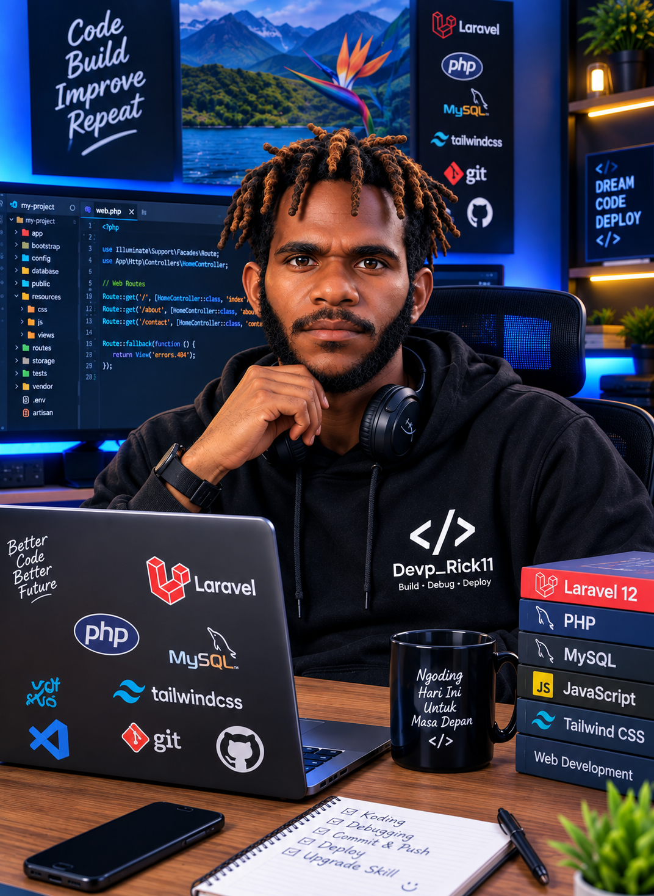

Karya Terpilih
Saya Devp Rick11, Product Designer & Frontend Developer asal Jakarta. Lima tahun terakhir saya membangun sistem desain dan antarmuka soft-UI untuk produk fintech, kesehatan, dan gaya hidup — dari riset hingga baris kode terakhir.

5+
tahun pengalaman
50+
proyek selesai
32
klien lintas industri
98%
tingkat kepuasan klien
12
penghargaan desain
5
tahun di industri produk digital
Tentang saya
Perjalanan saya dimulai dari mengutak-atik CSS pada 2019, lalu berlanjut ke riset pengguna dan sistem desain untuk perusahaan rintisan fintech di Jakarta. Sejak itu saya berfokus pada gaya soft-UI dan neumorphism — pendekatan yang menuntut kedisiplinan tinggi pada pencahayaan, kontras, dan aksesibilitas agar tetap nyaman digunakan.
Di luar layar, saya mengajar kelas desain UI dasar untuk komunitas developer di Jakarta dan menulis catatan singkat tentang detail interaksi yang sering terlewat.
Keahlian
Apa yang saya tawarkan
Karya Terpilih
Perjalanan karier
Apa kata klien
Catatan & tulisan
Kontak
Saya membuka slot terbatas untuk kolaborasi lepas mulai November 2026. Ceritakan kebutuhan Anda, saya akan membalas dalam 1–2 hari kerja.